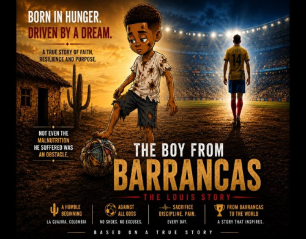

Louis: the boy from barrancas - All languages edition
Product profile · Marketplace data 2026-10-09 · Sales-page research 2026-10-09 · Categories: Personal Development

Marketplace record
| Product type | E-books |
|---|---|
| Price | $14.99 (Single payment) |
| Affiliate commission | 60% |
| Refund window | Per the vendor's sales page — check the official page before buying |
| Vendor | arcems12211834 (listed since 2026-07-13) |
| Marketplace stats* | Cart conversion — · cancel rate — · affiliate earnings/sale $8.99 |
* Vendor-side marketplace statistics reported by Digistore24; they depend on traffic quality and are not a forecast.
Vendor's marketplace description
Louis: The Boy From Barrancas – All Languages Edition A cinematic and illustrated digital ebook inspired by true events. Included with your purchase: • Complete ebook story• 11 chapters• More than 70 pages• PDF and EPUB formats• English, Spanish, German and Portuguese versions• Instant digital download• 60-Day Money Back Guarantee Follow Louis, a boy born in poverty in Barrancas, Colombia, as he p…
From the vendor's sales page
Page title: The Boy from Barrancas — The Louis Story | A Journey of Faith, Grit and Glory
Meta description: The true story of Louis, a Wayuu boy from La Guajira, Colombia, who turned poverty into a soccer journey across three continents. eBook in EN, ES, DE, PT.
Research method: raw HTML fetch · 18 words on page · quality: thin · researched 2026-10-09. Full research file (MD) ↗
Where to check it out
Read the vendor's full sales page (current price, guarantee terms and bonuses are listed there):
View official sales page
That link is an affiliate link — if you buy through it we earn a commission from the vendor at no extra cost to you.